Last updated: 2024-03-11
Checks: 7 0
Knit directory:
ProtocolLabRotationSaezRodriguezGroup/
This reproducible R Markdown analysis was created with workflowr (version 1.7.1). The Checks tab describes the reproducibility checks that were applied when the results were created. The Past versions tab lists the development history.
Great! Since the R Markdown file has been committed to the Git repository, you know the exact version of the code that produced these results.
Great job! The global environment was empty. Objects defined in the global environment can affect the analysis in your R Markdown file in unknown ways. For reproduciblity it’s best to always run the code in an empty environment.
The command set.seed(20240306) was run prior to running
the code in the R Markdown file. Setting a seed ensures that any results
that rely on randomness, e.g. subsampling or permutations, are
reproducible.
Great job! Recording the operating system, R version, and package versions is critical for reproducibility.
Nice! There were no cached chunks for this analysis, so you can be confident that you successfully produced the results during this run.
Great job! Using relative paths to the files within your workflowr project makes it easier to run your code on other machines.
Great! You are using Git for version control. Tracking code development and connecting the code version to the results is critical for reproducibility.
The results in this page were generated with repository version 9fe1532. See the Past versions tab to see a history of the changes made to the R Markdown and HTML files.
Note that you need to be careful to ensure that all relevant files for
the analysis have been committed to Git prior to generating the results
(you can use wflow_publish or
wflow_git_commit). workflowr only checks the R Markdown
file, but you know if there are other scripts or data files that it
depends on. Below is the status of the Git repository when the results
were generated:
Untracked files:
Untracked: 10X_Visium_ACH005.tar.gz
Untracked: ACH005/
Untracked: bc_metadata.tsv
Untracked: data/10X_Visium_ACH005.tar.gz
Untracked: hca_p14.rds
Untracked: imc_bc_optim_zoi.RDS
Untracked: omni_resource.csv
Untracked: omnipathr-log/
Untracked: result/
Untracked: results/
Note that any generated files, e.g. HTML, png, CSS, etc., are not included in this status report because it is ok for generated content to have uncommitted changes.
These are the previous versions of the repository in which changes were
made to the R Markdown
(analysis/FunctionalAndStructuralPipeline.Rmd) and HTML
(docs/FunctionalAndStructuralPipeline.html) files. If
you’ve configured a remote Git repository (see
?wflow_git_remote), click on the hyperlinks in the table
below to view the files as they were in that past version.
| File | Version | Author | Date | Message |
|---|---|---|---|---|
| html | a7395df | leotenshii | 2024-03-11 | Build site. |
| html | 64a10dc | leotenshii | 2024-03-11 | added html |
| Rmd | 38a9f93 | leotenshii | 2024-03-11 | Revert "changed paths to data/…" |
| Rmd | 5e9bf15 | leotenshii | 2024-03-11 | changed paths to data/… |
| Rmd | 5ec41b8 | leotenshii | 2024-03-11 | upload of vignettes |
10X Visium captures spatially resolved transcriptomic profiles in spots containing multiple cells. In this vignette, we will use the gene expression information from Visium data to infer pathway and transcription factor activity and separately investigate spatial relationships between them and the cell-type composition. In addition, we will examine spatial relationships of ligands and receptors.
Load the necessary R packages:
# MISTy
library(mistyR)
# For using Python
library(reticulate)
# Seurat
library(Seurat)
# Data manipulation
library(tidyverse)
# Pathways
library(decoupleR)
#Cleaning names
library(janitor)We will use some functions in python since the computation time is significantly shorter than in R. Python chunks start with a #In Python. Install and load the necessary package for Python:
py_install(c("decoupler","omnipath"), pip =TRUE)Using virtual environment "C:/Users/leote/Documents/.virtualenvs/r-reticulate" ...+ "C:/Users/leote/Documents/.virtualenvs/r-reticulate/Scripts/python.exe" -m pip install --upgrade --no-user decoupler omnipath# In Python:
import decoupler as dcFor this showcase, we use a 10X Visium spatial slide from Kuppe et al., 2022, where they created a spatial multi-omic map of human myocardial infarction. The tissue example data comes from the human heart of patient 14, which is in a chronic state following myocardial infarction. The Seurat object contains, among other things, the normalized and raw gene counts. First, we have to download and extract the file:
download.file("https://zenodo.org/records/6580069/files/10X_Visium_ACH005.tar.gz?download=1",
destfile = "10X_Visium_ACH005.tar.gz", method = "curl")
untar("10X_Visium_ACH005.tar.gz")The next step is to load the data, extract the normalized gene counts of genes expressed in at least 5% of the spots, and pixel coordinates. It is recommended to use pixel coordinates instead of row and column numbers since the rows are shifted and therefore do not express the real distance between the spots.
seurat <- readRDS("ACH005/ACH005.rds")
expression_raw <- as.matrix(GetAssayData(seurat, layer = "counts", assay = "SCT"))
geometry <- GetTissueCoordinates(seurat, scale = NULL)
# Only take genes that expressed in at least 5% of the spots
expression <- expression_raw[rownames(expression_raw[(rowSums(expression_raw > 0) / ncol(expression_raw)) >= 0.05,]),]Let’s take a look at the slide itself and some of the cell-type niches defined by Kuppe et al.:
SpatialPlot(seurat, alpha = 0)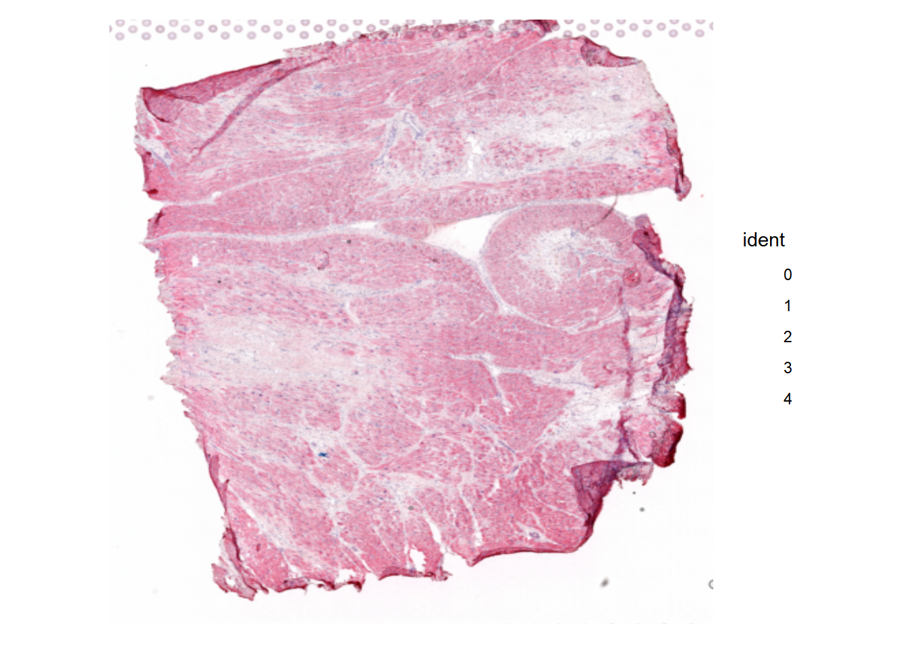
| Version | Author | Date |
|---|---|---|
| 64a10dc | leotenshii | 2024-03-11 |
SpatialPlot(seurat, group.by = "celltype_niche")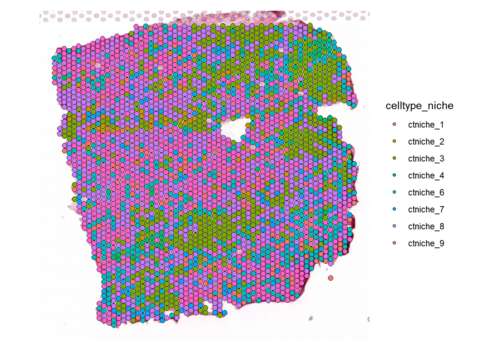
| Version | Author | Date |
|---|---|---|
| 64a10dc | leotenshii | 2024-03-11 |
The Seurat Object of the tissue slide also contains the estimated cell type proportions from cell2location. We extract them into a separate object we will later use with MISTy and visualize some of the cell types:
# Rename to more informative names
rownames(seurat@assays$c2l_props@data) <- rownames(seurat@assays$c2l_props@data) %>%
recode('Adipo' = 'Adipocytes',
'CM' = 'Cardiomyocytes',
'Endo' = 'Endothelial',
'Fib' = 'Fibroblasts',
'PC' = 'Pericytes',
'prolif' = 'Proliferating',
'vSMCs' = 'Vascular-SMCs')
# Extract into a separate object
composition <- as_tibble(t(seurat[["c2l_props"]]$data))
# Visualize cell types
DefaultAssay(seurat) <- "c2l_props"
SpatialFeaturePlot(seurat,
keep.scale = NULL,
features = c('Vascular-SMCs', "Cardiomyocytes", "Endothelial", "Fibroblasts"),
ncol = 2) 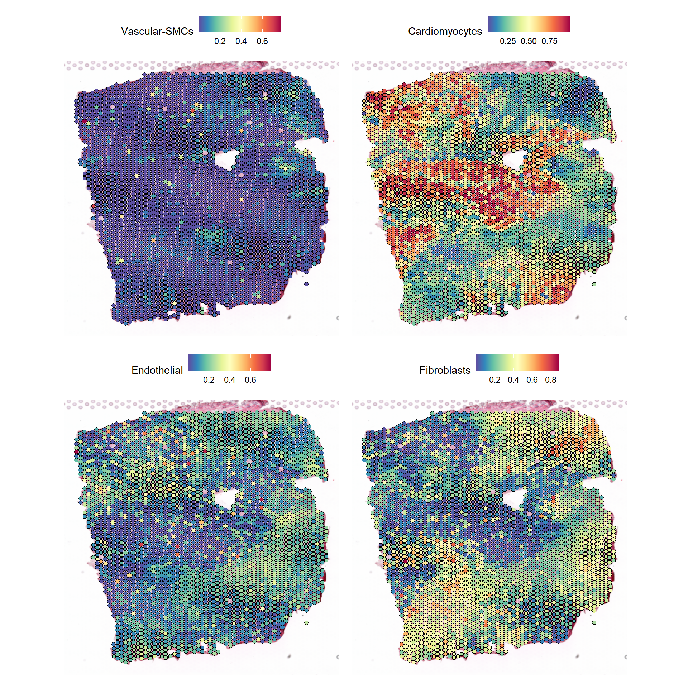
| Version | Author | Date |
|---|---|---|
| 64a10dc | leotenshii | 2024-03-11 |
Let’s investigate the relationship between the cell-type compositions
and pathway activities in our example slide. But before we create the
views, we need to estimate the pathway activities. For this we will take
pathway gene sets from PROGENy
and estimate the activity with decoupleR:
# Obtain genesets
model <- get_progeny(organism = "human", top = 500)
# Use multivariate linear model to estimate activity
est_path_act <- run_mlm(expression, model,.mor = NULL) We add the result to the Seurat Object and plot the estimated activities to see the distribution over the slide:
# Delete progeny assay from Kuppe et al.
seurat[['progeny']] <- NULL
# Put estimated pathway activities object into the correct format
est_path_act_wide <- est_path_act %>%
pivot_wider(id_cols = condition, names_from = source, values_from = score) %>%
column_to_rownames("condition")
# Clean names
colnames(est_path_act_wide) <- est_path_act_wide %>%
clean_names(parsing_option = 0) %>%
colnames(.)
# Add
seurat[['progeny']] <- CreateAssayObject(counts = t(est_path_act_wide))
SpatialFeaturePlot(seurat, features = c("jak.stat", "hypoxia"), image.alpha = 0)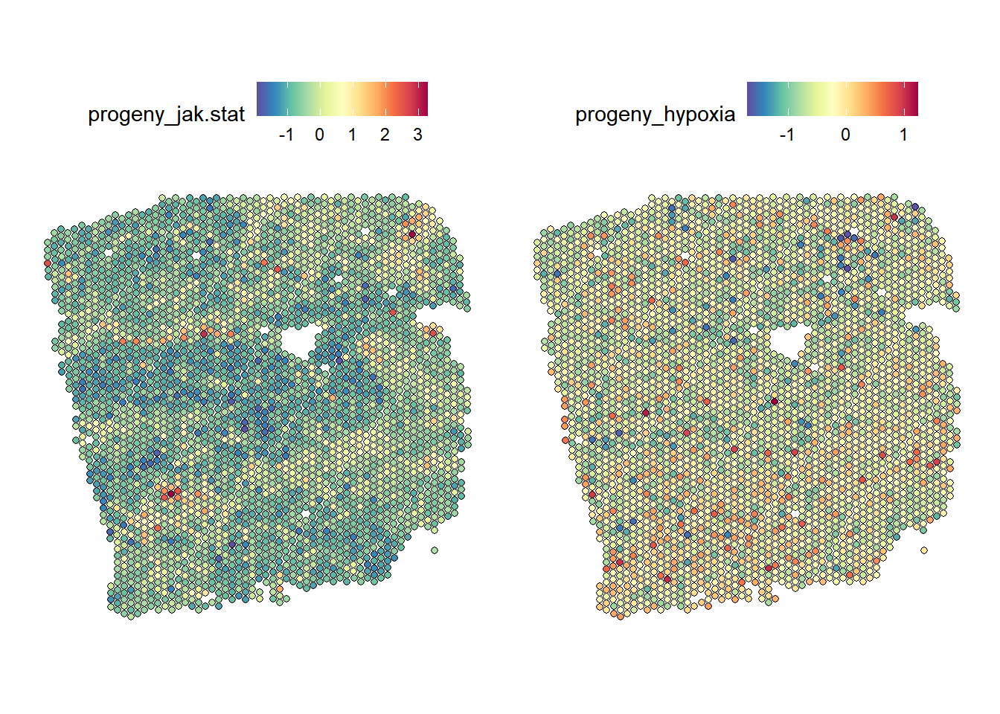
| Version | Author | Date |
|---|---|---|
| 64a10dc | leotenshii | 2024-03-11 |
For the MISTy view, we will use cell type compositions per spot as
the intraview and add the estimated PROGENy
pathway activities as juxta and paraviews. The size of the neighborhood
and the kernel, as well as the kernel family, should be chosen depending
on the experiment. Here both distances were chosen to enclose only a
small number of neighboring spots.
# Clean names
colnames(composition) <- composition %>% clean_names(parsing_option = 0) %>% colnames(.)
# create intra from cell-type composition
comp_views <- create_initial_view(composition)
# juxta & para from pathway activity
path_act_views <- create_initial_view(est_path_act_wide) %>%
add_juxtaview(geometry, neighbor.thr = 130) %>%
add_paraview(geometry, l= 200, family = "gaussian")
# Combine views
com_path_act_views <- comp_views %>%
add_views(create_view("juxtaview.path.130", path_act_views[["juxtaview.130"]]$data, "juxta.path.130"))%>%
add_views(create_view("paraview.path.200", path_act_views[["paraview.200"]]$data, "para.path.200")) Then run MISTy and collect the results:
run_misty(com_path_act_views, "result/comp_path_act")[1] "F:/LabRotationSaez/ProtocolLabRotationSaezRodriguezGroup/result/comp_path_act"misty_results_com_path_act <- collect_results("result/comp_path_act/")With the collected results, we can now answer the following questions:
Here we can look at two different statistics: intra.R2
shows the variance explained by the intraview alone, and
gain.R2 shows the increase in explainable variance when we
additionally consider the other views (here juxta and para).
misty_results_com_path_act %>%
plot_improvement_stats("intra.R2")%>%
plot_improvement_stats("gain.R2") Warning: Removed 11 rows containing missing values or values outside the scale range
(`geom_segment()`).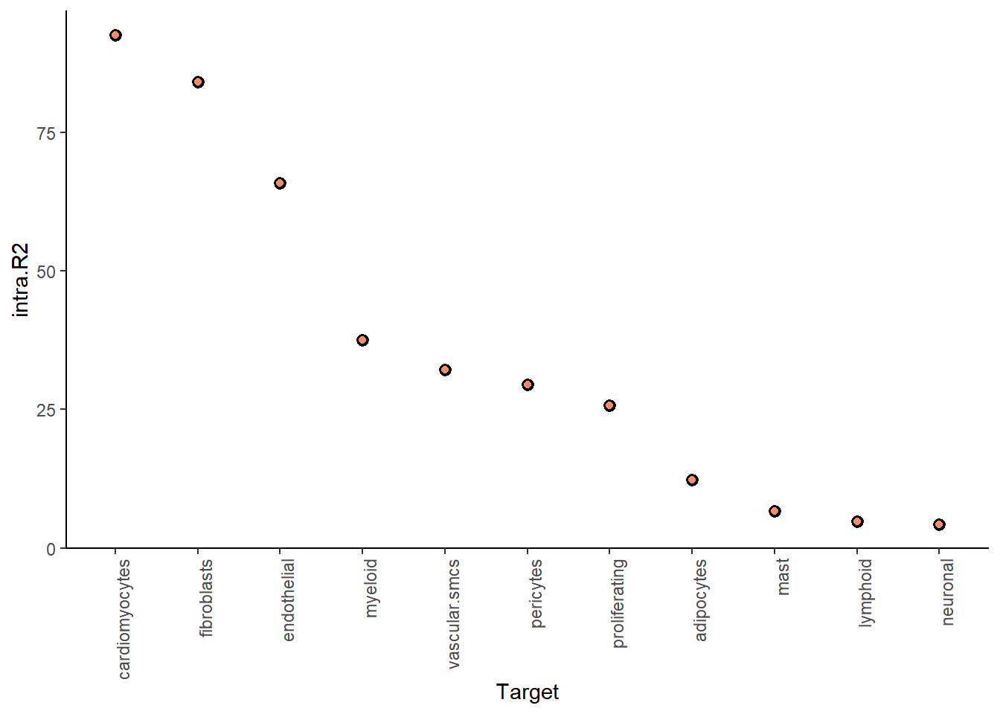
| Version | Author | Date |
|---|---|---|
| 64a10dc | leotenshii | 2024-03-11 |
Warning: Removed 11 rows containing missing values or values outside the scale range
(`geom_segment()`).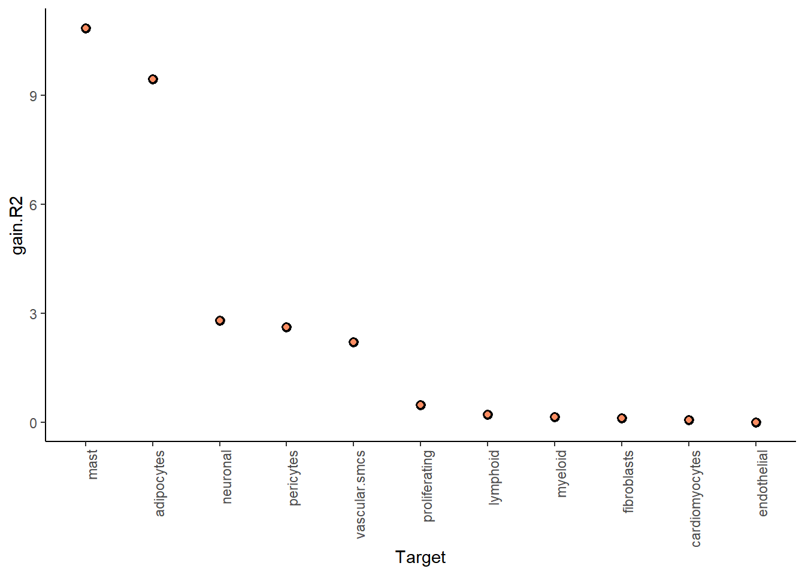
| Version | Author | Date |
|---|---|---|
| 64a10dc | leotenshii | 2024-03-11 |
The juxta and paraview particularly increase the explained variance for mast cells and adipocytes.
In general, the significant gain in R2 can be interpreted as the following:
“We can better explain the expression of marker X when we consider additional views other than the intrinsic view.”
To see the individual contributions of the views we can use:
misty_results_com_path_act %>%
plot_view_contributions()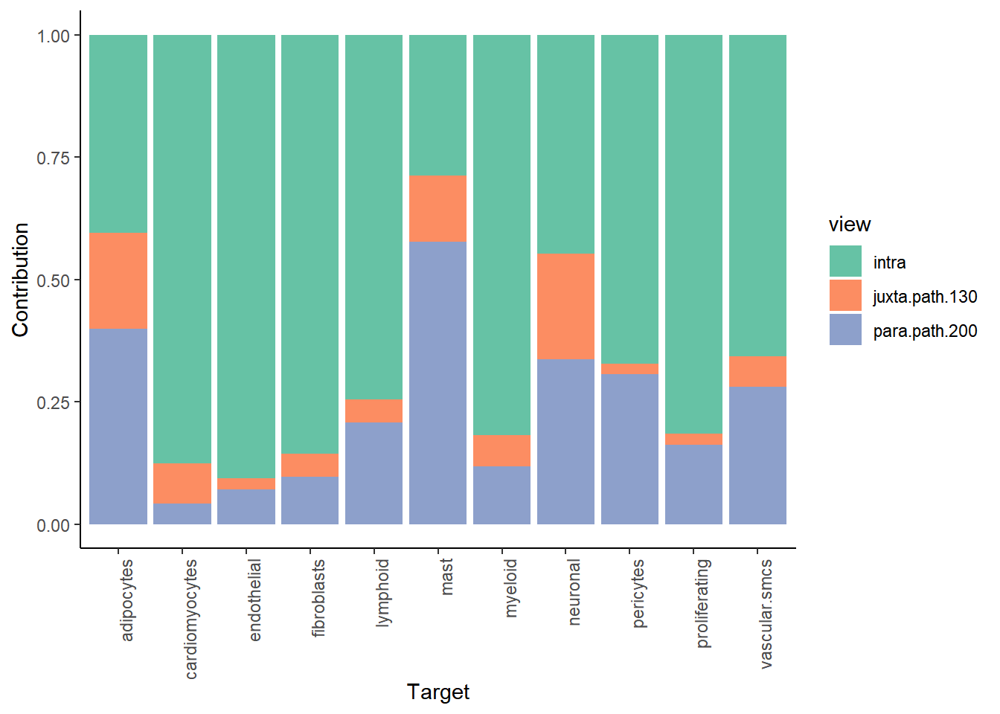
| Version | Author | Date |
|---|---|---|
| 64a10dc | leotenshii | 2024-03-11 |
We see, that the intraview explains the most variance for nearly all cell types (as expected).
We can individually show the importance of the markers from each viewpoint as predictors of the spot intrinsic cell-type composition to explain the contributions.
Let’s look at the juxtaview:
misty_results_com_path_act %>%
plot_interaction_heatmap("juxta.path.130", clean = TRUE)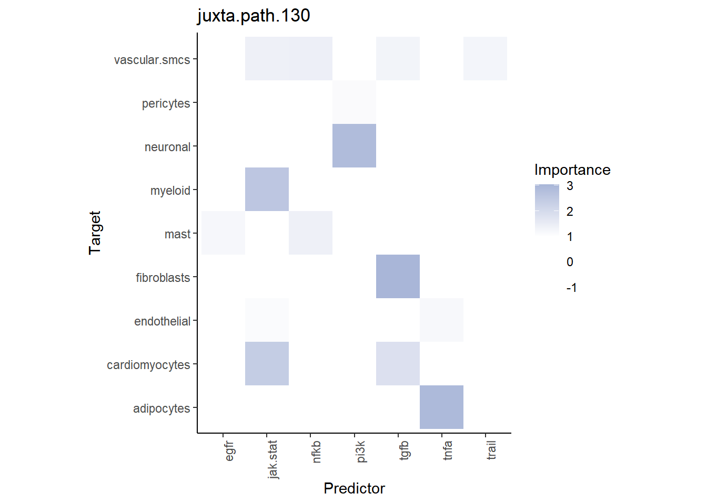
| Version | Author | Date |
|---|---|---|
| 64a10dc | leotenshii | 2024-03-11 |
We observe that TNFa is a significant predictor for adipocytes. We can compare their distributions:
SpatialFeaturePlot(seurat, features = "tnfa", image.alpha = 0)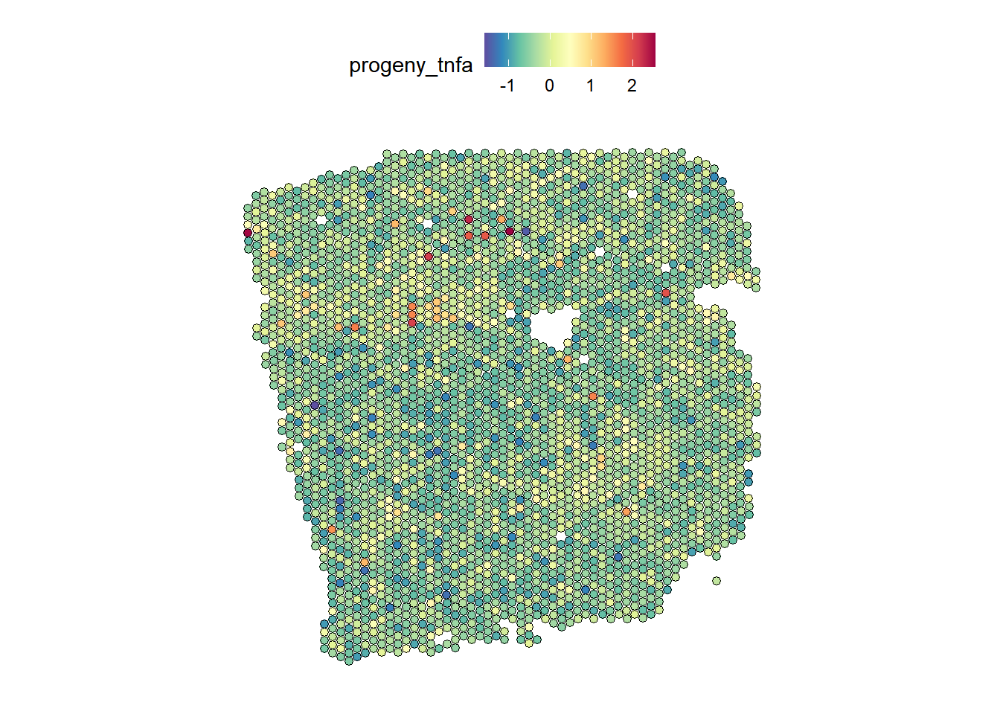
| Version | Author | Date |
|---|---|---|
| 64a10dc | leotenshii | 2024-03-11 |
DefaultAssay(seurat) <- "c2l_props"
SpatialFeaturePlot(seurat, features = "Adipocytes", image.alpha = 0)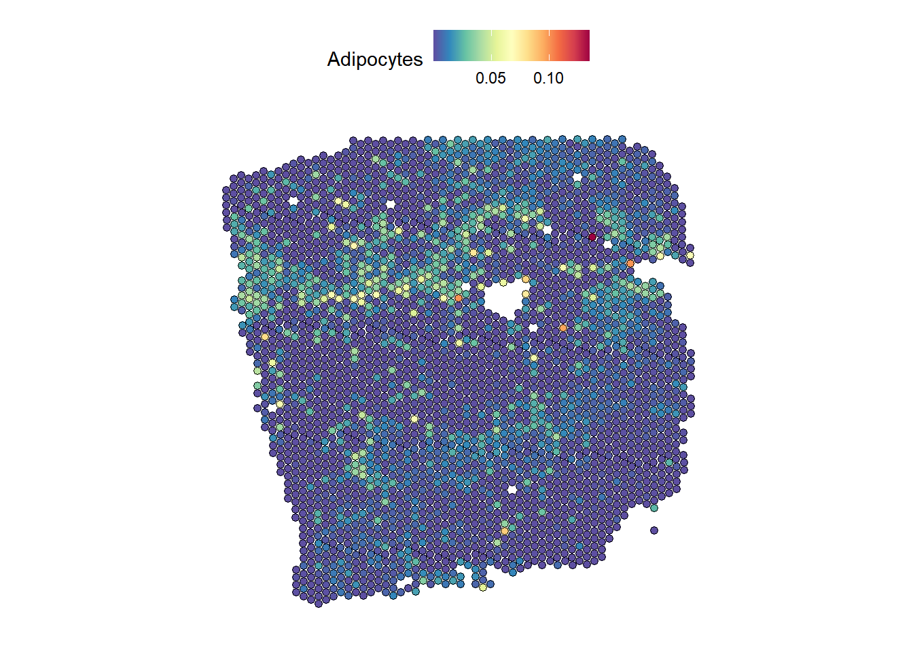
| Version | Author | Date |
|---|---|---|
| 64a10dc | leotenshii | 2024-03-11 |
We observe similar distributions for both.
The default model used by MISTy to model each view is the random forest. However, there are different models to choose from, like the faster and more interpretable linear model.
Another option we haven’t used yet is bypass.intra. With
this, we bypass training the baseline model that predicts the intraview
with features from the intraview itself. We will still be able to see
how the other views explain the intraview. We will use the same view
composition as before:
run_misty(com_path_act_views, "result/comp_path_act_linear", model.function = linear_model, bypass.intra = TRUE)[1] "F:/LabRotationSaez/ProtocolLabRotationSaezRodriguezGroup/result/comp_path_act_linear"misty_results_com_path_act_linear <- collect_results("result/comp_path_act_linear")Let’s check again the gain.R2 and view
contributions:
misty_results_com_path_act_linear %>%
plot_improvement_stats("gain.R2") %>%
plot_view_contributions()Warning: Removed 11 rows containing missing values or values outside the scale range
(`geom_segment()`).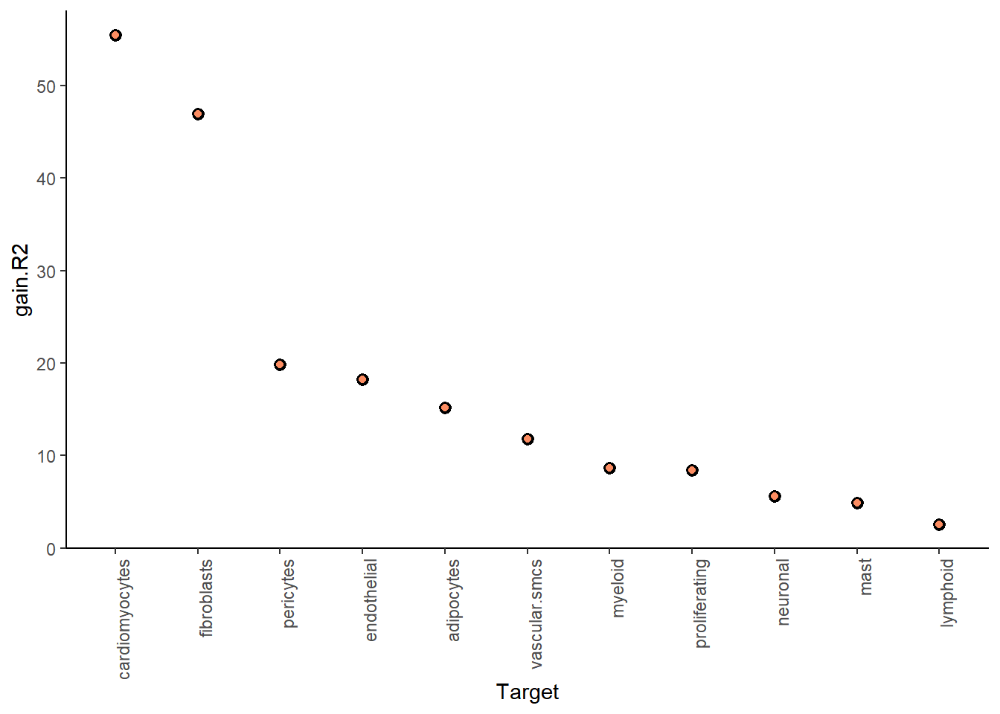
| Version | Author | Date |
|---|---|---|
| 64a10dc | leotenshii | 2024-03-11 |
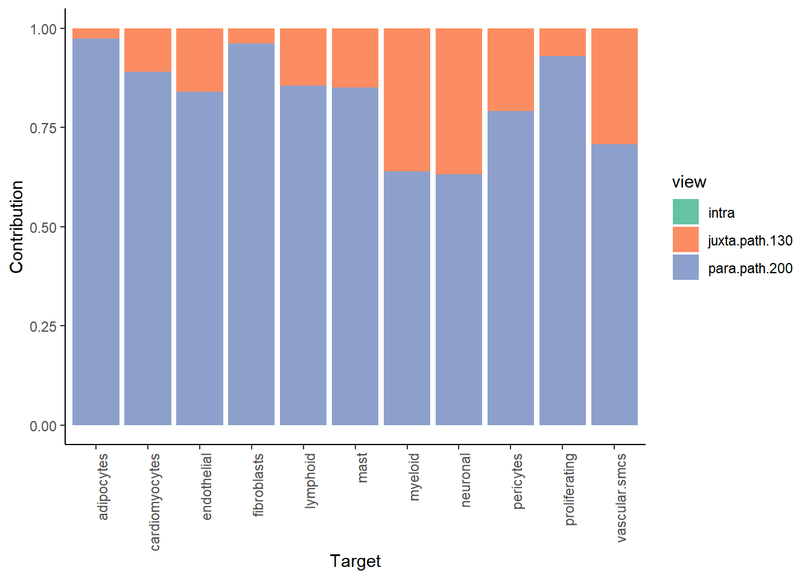
| Version | Author | Date |
|---|---|---|
| 64a10dc | leotenshii | 2024-03-11 |
For the specific target-predictor interaction, we look again at the juxtaview:
misty_results_com_path_act_linear %>%
plot_interaction_heatmap("juxta.path.130", clean = TRUE) 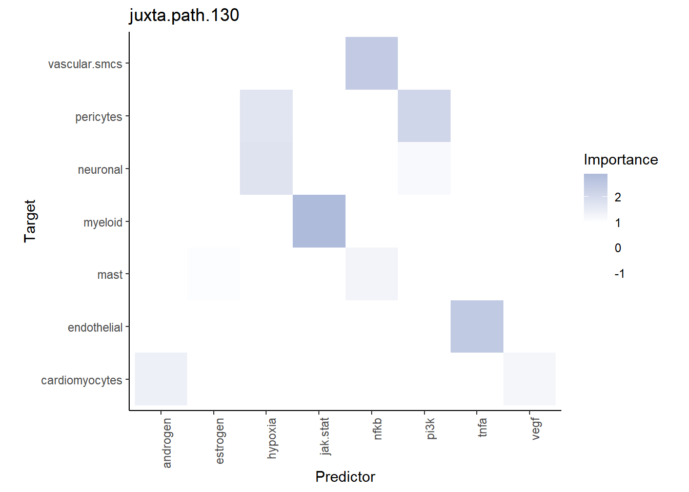
| Version | Author | Date |
|---|---|---|
| 64a10dc | leotenshii | 2024-03-11 |
Visualize the activity of the JAK-STAT pathway and myeloid distribution:
SpatialFeaturePlot(seurat, features = "jak.stat", image.alpha = 0)Warning: Could not find jak.stat in the default search locations, found in
'progeny' assay instead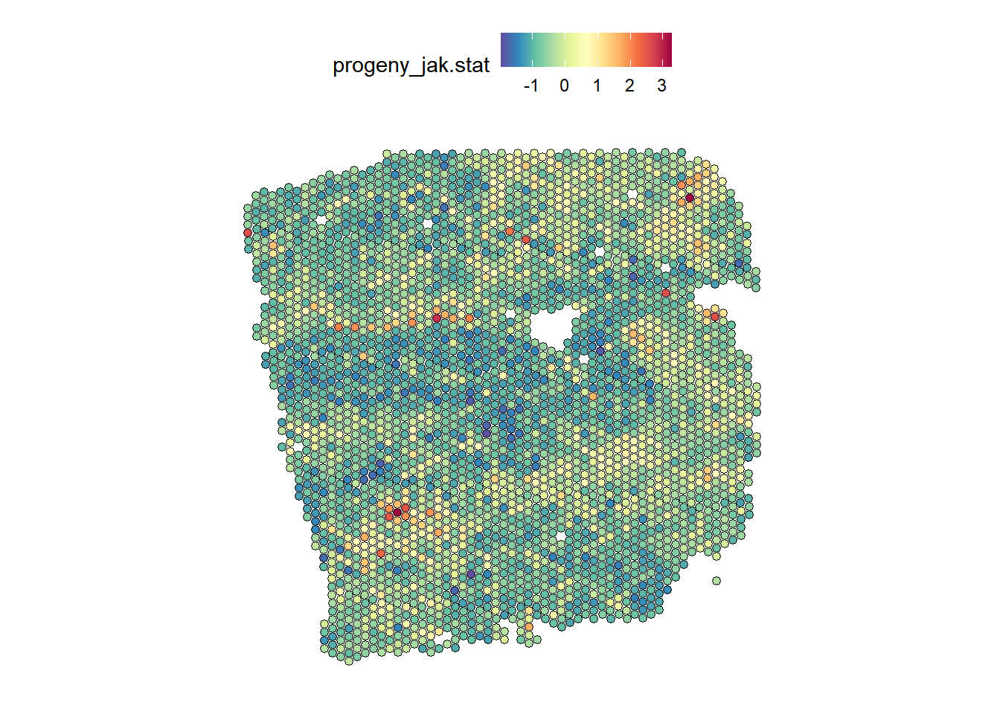
| Version | Author | Date |
|---|---|---|
| 64a10dc | leotenshii | 2024-03-11 |
DefaultAssay(seurat) <- "c2l_props"
SpatialFeaturePlot(seurat, features = "Myeloid", image.alpha = 0)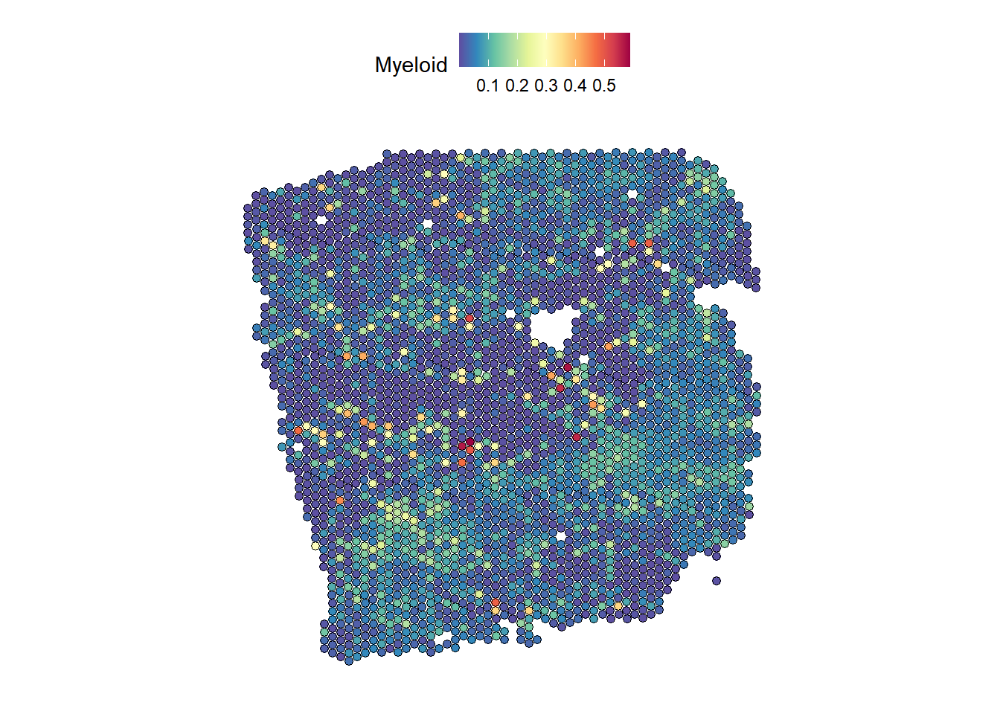
| Version | Author | Date |
|---|---|---|
| 64a10dc | leotenshii | 2024-03-11 |
In addition to the estimated pathway activities, we can also add a view to examine the relationship between cell-type composition and TF activity. First, we need to estimate the TF activity with decoupler. It is recommended to compute it with Python, as it is significantly faster:
expression_df <- as.data.frame(t(expression))# In Python:
net = dc.get_collectri()
acts_tfs= dc.run_ulm(
mat = r.expression_df,
net = net,
verbose = True,
use_raw = False,
)Running ulm on mat with 3175 samples and 7241 targets for 545 sources.The object with the estimation contains two elements: The first are the estimates and their respective p-values can be found in the second element.
est_TF <- py$acts_tfsTo speed up the following model training, we calculate the 1000 most variable genes expressed. We then extract the TF from the highly variable genes to create a MISTy view.
# Highly variable genes
hvg <- FindVariableFeatures(expression, selection.method = "vst", nfeatures = 1000) %>%
filter(variable == TRUE)
hvg_expr <- expression[rownames(hvg), ]
# Extract TF from the highly variable genes
hvg_TF<- est_TF[[1]][, colnames(est_TF[[1]]) %in% rownames(hvg_expr)]We will combine the intraview from the cell-type composition and paraviews from the estimated pathway and TF activities:
TF_view <- create_initial_view(hvg_TF) %>%
add_paraview(geometry, l = 200) # This may still take some time
# Combine Views
comp_TF_path_views <- comp_views %>% add_views(create_view("paraview.TF.200", TF_view[["paraview.200"]]$data, "para.TF.200")) %>%
add_views(create_view("paraview.path.200", path_act_views[["paraview.200"]]$data, "para.path.200"))
# Run Misty
run_misty(comp_TF_path_views, "result/comp_TF_path", model.function = linear_model, bypass.intra = TRUE)[1] "F:/LabRotationSaez/ProtocolLabRotationSaezRodriguezGroup/result/comp_TF_path"misty_results_comp_TF_pathway <- collect_results("result/comp_TF_path")misty_results_comp_TF_pathway %>%
plot_improvement_stats("gain.R2") %>%
plot_view_contributions()Warning: Removed 11 rows containing missing values or values outside the scale range
(`geom_segment()`).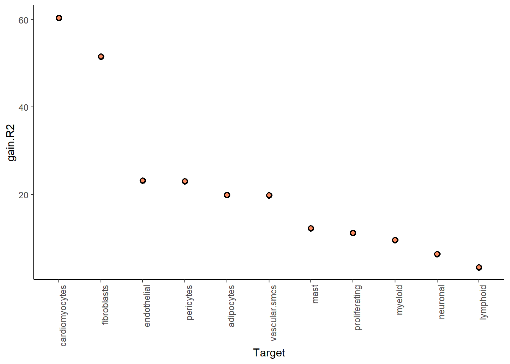
| Version | Author | Date |
|---|---|---|
| 64a10dc | leotenshii | 2024-03-11 |
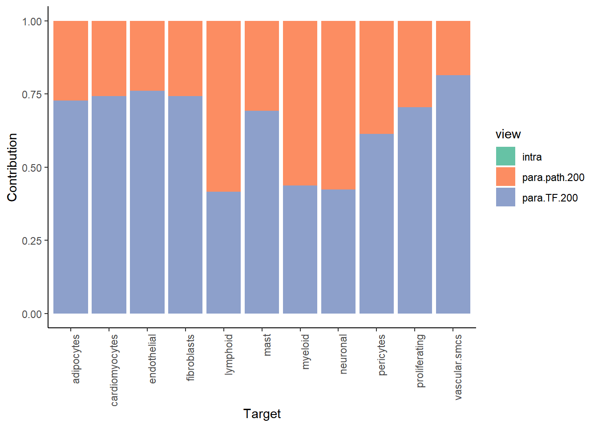
| Version | Author | Date |
|---|---|---|
| 64a10dc | leotenshii | 2024-03-11 |
When plotting the interaction heatmap, we can restrict the result by
applying a trim, that only shows targets above a defined
value for a chosen metric like gain.R2.
misty_results_comp_TF_pathway %>%
plot_interaction_heatmap("para.TF.200",
clean = TRUE,
trim.measure = "gain.R2",
trim = 20)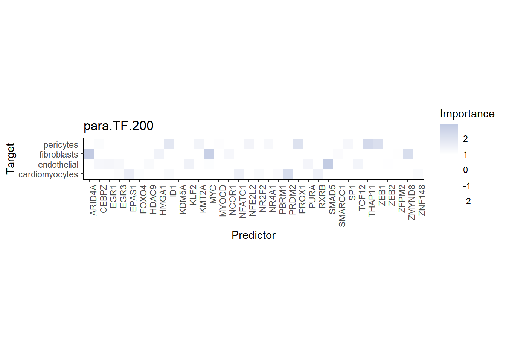
| Version | Author | Date |
|---|---|---|
| 64a10dc | leotenshii | 2024-03-11 |
The TF MYC is an important predictor of fibroblasts:
DefaultAssay(seurat) <- "SCT"
SpatialFeaturePlot(seurat, features = "MYC", image.alpha = 0)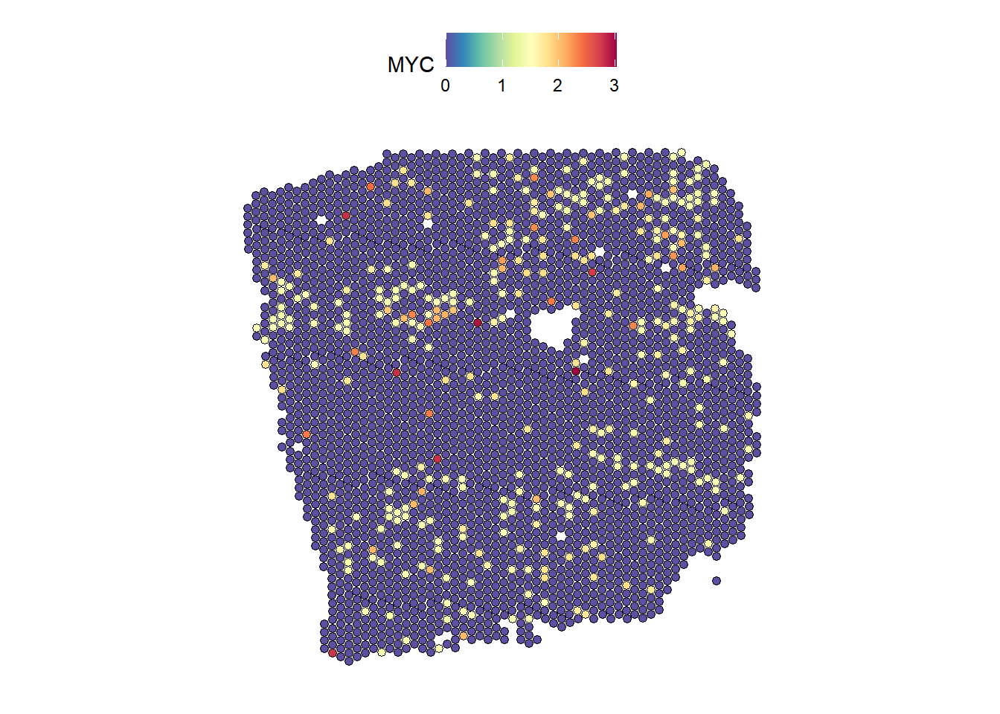
| Version | Author | Date |
|---|---|---|
| 64a10dc | leotenshii | 2024-03-11 |
DefaultAssay(seurat) <- "c2l_props"
SpatialFeaturePlot(seurat, features = "Fibroblasts", image.alpha = 0)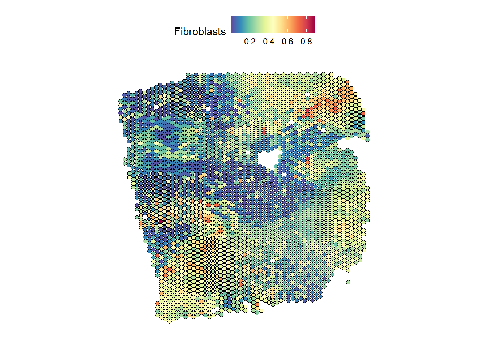
| Version | Author | Date |
|---|---|---|
| 64a10dc | leotenshii | 2024-03-11 |
Indeed, we can see a similar distribution.
Finally, we want to learn about the spatial relationship of receptors
and ligands on the tissue slide. We will access the consensus resource
from LIANA
after downloading it from Github, pulling out the ligands and receptors
from the before-determined highly variable genes:
download.file("https://raw.githubusercontent.com/saezlab/liana-py/main/liana/resource/omni_resource.csv",
destfile = "omni_resource.csv", method = "curl")
# Ligand Receptor Resource
omni_resource <- read_csv("omni_resource.csv")%>%
filter(resource == "consensus")
# Get highly variable ligands
ligands <- omni_resource %>%
pull(source_genesymbol) %>%
unique()
hvg_lig <- hvg_expr[rownames(hvg_expr) %in% ligands,]
# Get highly variable receptors
receptors <- omni_resource %>%
pull(target_genesymbol) %>%
unique()
hvg_recep <- hvg_expr[rownames(hvg_expr) %in% receptors,]
# Clean names
rownames(hvg_lig) <- hvg_lig %>%
clean_names(parsing_option = 0) %>%
rownames(.)
rownames(hvg_recep) <- hvg_recep %>% clean_names(parsing_option = 0) %>%
rownames(.)We are going to create a combined view with the receptors in the intraview as targets and the ligands in the paraview as predictors:
# Create views and combine them
receptor_view <- create_initial_view(as.data.frame(t(hvg_lig)))
ligand_view <- create_initial_view(as.data.frame(t(hvg_recep))) %>%
add_paraview(geometry, l = 200, family = "gaussian")
lig_recep_view <- receptor_view %>% add_views(create_view("paraview.ligand.200", ligand_view[["paraview.200"]]$data, "para.lig.200"))
run_misty(lig_recep_view, "results/lig_recep", bypass.intra = TRUE)[1] "F:/LabRotationSaez/ProtocolLabRotationSaezRodriguezGroup/results/lig_recep"misty_results_lig_recep <- collect_results("results/lig_recep")Let’s look at important interactions. An additional way to reduce the
number of interactions shown in the heatmap is applying a
cutoff, that introduces an importance threshold:
misty_results_lig_recep %>%
plot_interaction_heatmap("para.lig.200", clean = TRUE, cutoff = 2, trim.measure ="gain.R2", trim = 25)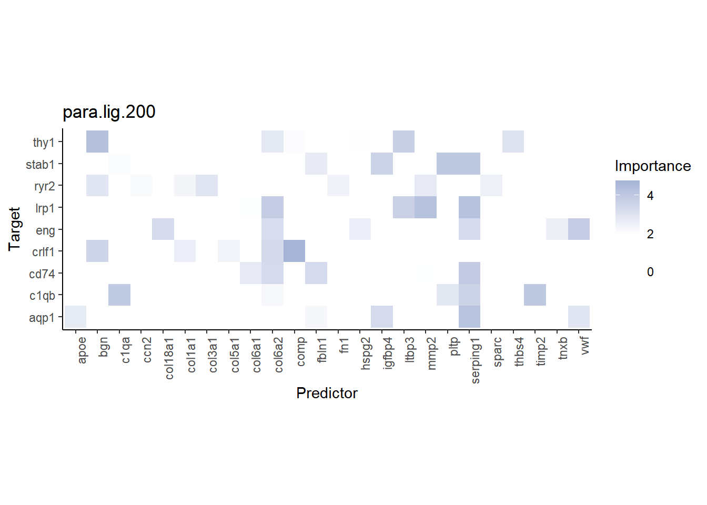
| Version | Author | Date |
|---|---|---|
| 64a10dc | leotenshii | 2024-03-11 |
Remember that MISTy does not only infer interactions between ligands and their respective receptor, but rather all possible interactions between ligands and receptors. We can visualize one of the interactions with high importance:
DefaultAssay(seurat) <- "SCT"
SpatialFeaturePlot(seurat, features = "CRLF1", image.alpha = 0)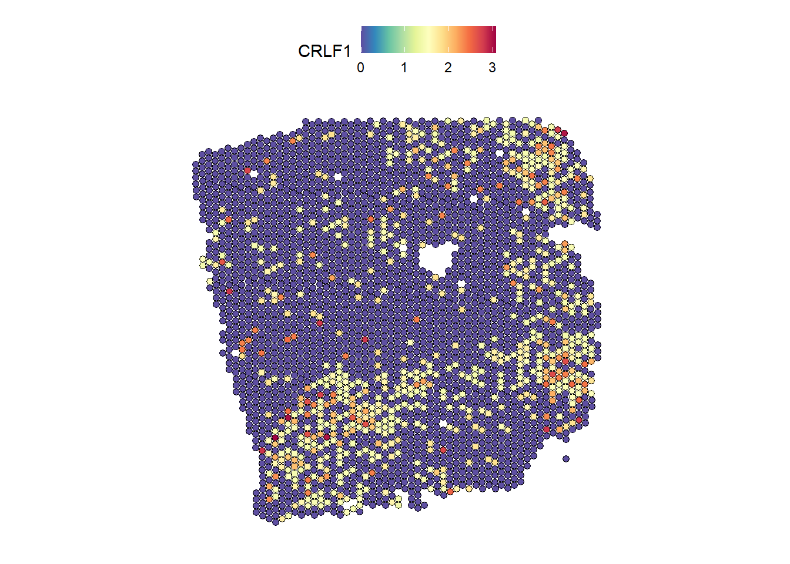
| Version | Author | Date |
|---|---|---|
| 64a10dc | leotenshii | 2024-03-11 |
SpatialFeaturePlot(seurat, features = "COMP", image.alpha = 0)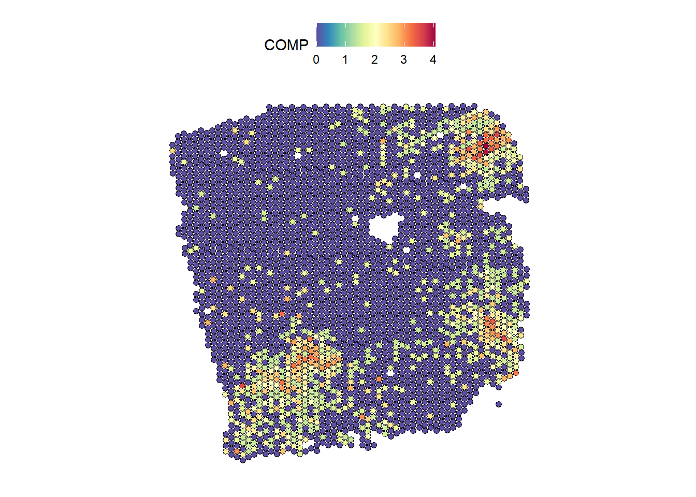
| Version | Author | Date |
|---|---|---|
| 64a10dc | leotenshii | 2024-03-11 |
The plots show a co-occurrence of the ligand and receptor, although they are not an annotated receptor-ligand pair.
browseVignettes("mistyR")
Here is the output of sessionInfo() at the point when
this document was compiled.
sessionInfo()R version 4.3.2 (2023-10-31 ucrt)
Platform: x86_64-w64-mingw32/x64 (64-bit)
Running under: Windows 10 x64 (build 19045)
Matrix products: default
locale:
[1] LC_COLLATE=German_Germany.utf8 LC_CTYPE=German_Germany.utf8
[3] LC_MONETARY=German_Germany.utf8 LC_NUMERIC=C
[5] LC_TIME=German_Germany.utf8
time zone: Europe/Berlin
tzcode source: internal
attached base packages:
[1] stats graphics grDevices utils datasets methods base
other attached packages:
[1] distances_0.1.10 janitor_2.2.0 decoupleR_2.8.0 lubridate_1.9.3
[5] forcats_1.0.0 stringr_1.5.1 dplyr_1.1.4 purrr_1.0.2
[9] readr_2.1.5 tidyr_1.3.0 tibble_3.2.1 ggplot2_3.5.0
[13] tidyverse_2.0.0 Seurat_5.0.1 SeuratObject_5.0.1 sp_2.1-2
[17] reticulate_1.34.0 mistyR_1.10.0 workflowr_1.7.1
loaded via a namespace (and not attached):
[1] RcppAnnoy_0.0.21 splines_4.3.2 later_1.3.2
[4] filelock_1.0.3 R.oo_1.26.0 cellranger_1.1.0
[7] polyclip_1.10-6 hardhat_1.3.1 pROC_1.18.5
[10] rpart_4.1.23 fastDummies_1.7.3 lifecycle_1.0.4
[13] rprojroot_2.0.4 globals_0.16.3 processx_3.8.3
[16] lattice_0.22-5 vroom_1.6.5 MASS_7.3-60
[19] backports_1.4.1 magrittr_2.0.3 plotly_4.10.3
[22] sass_0.4.8 rmarkdown_2.25 jquerylib_0.1.4
[25] yaml_2.3.8 rlist_0.4.6.2 httpuv_1.6.13
[28] sctransform_0.4.1 spam_2.10-0 spatstat.sparse_3.0-3
[31] cowplot_1.1.2 pbapply_1.7-2 RColorBrewer_1.1-3
[34] abind_1.4-5 rvest_1.0.3 Rtsne_0.17
[37] R.utils_2.12.3 nnet_7.3-19 rappdirs_0.3.3
[40] ipred_0.9-14 git2r_0.33.0 lava_1.8.0
[43] ggrepel_0.9.4 irlba_2.3.5.1 listenv_0.9.1
[46] spatstat.utils_3.0-4 goftest_1.2-3 RSpectra_0.16-1
[49] spatstat.random_3.2-2 fitdistrplus_1.1-11 parallelly_1.37.1
[52] leiden_0.4.3.1 codetools_0.2-19 xml2_1.3.6
[55] tidyselect_1.2.0 farver_2.1.1 stats4_4.3.2
[58] matrixStats_1.2.0 spatstat.explore_3.2-5 jsonlite_1.8.8
[61] caret_6.0-94 ellipsis_0.3.2 progressr_0.14.0
[64] iterators_1.0.14 ggridges_0.5.5 survival_3.5-7
[67] foreach_1.5.2 tools_4.3.2 progress_1.2.3
[70] ica_1.0-3 Rcpp_1.0.11 glue_1.6.2
[73] prodlim_2023.08.28 gridExtra_2.3 ranger_0.16.0
[76] xfun_0.41 here_1.0.1 withr_3.0.0
[79] fastmap_1.1.1 fansi_1.0.6 callr_3.7.3
[82] digest_0.6.33 timechange_0.3.0 R6_2.5.1
[85] mime_0.12 colorspace_2.1-0 scattermore_1.2
[88] tensor_1.5 spatstat.data_3.0-3 R.methodsS3_1.8.2
[91] utf8_1.2.4 generics_0.1.3 recipes_1.0.10
[94] data.table_1.15.2 class_7.3-22 ridge_3.3
[97] prettyunits_1.2.0 httr_1.4.7 htmlwidgets_1.6.4
[100] whisker_0.4.1 ModelMetrics_1.2.2.2 uwot_0.1.16
[103] pkgconfig_2.0.3 gtable_0.3.4 timeDate_4032.109
[106] lmtest_0.9-40 selectr_0.4-2 furrr_0.3.1
[109] OmnipathR_3.10.1 htmltools_0.5.7 dotCall64_1.1-1
[112] scales_1.3.0 png_0.1-8 gower_1.0.1
[115] snakecase_0.11.1 knitr_1.45 rstudioapi_0.15.0
[118] tzdb_0.4.0 reshape2_1.4.4 checkmate_2.3.1
[121] nlme_3.1-164 curl_5.2.0 cachem_1.0.8
[124] zoo_1.8-12 KernSmooth_2.23-22 parallel_4.3.2
[127] miniUI_0.1.1.1 pillar_1.9.0 grid_4.3.2
[130] logger_0.2.2 vctrs_0.6.5 RANN_2.6.1
[133] promises_1.2.1 xtable_1.8-4 cluster_2.1.6
[136] archive_1.1.7 evaluate_0.23 cli_3.6.2
[139] compiler_4.3.2 rlang_1.1.2 crayon_1.5.2
[142] future.apply_1.11.1 labeling_0.4.3 ps_1.7.5
[145] getPass_0.2-4 plyr_1.8.9 fs_1.6.3
[148] stringi_1.8.3 viridisLite_0.4.2 deldir_2.0-4
[151] assertthat_0.2.1 munsell_0.5.0 lazyeval_0.2.2
[154] spatstat.geom_3.2-7 Matrix_1.6-4 RcppHNSW_0.5.0
[157] hms_1.1.3 patchwork_1.2.0.9000 bit64_4.0.5
[160] future_1.33.1 shiny_1.8.0 highr_0.10
[163] ROCR_1.0-11 igraph_1.6.0 bslib_0.6.1
[166] bit_4.0.5 readxl_1.4.3
sessionInfo()R version 4.3.2 (2023-10-31 ucrt)
Platform: x86_64-w64-mingw32/x64 (64-bit)
Running under: Windows 10 x64 (build 19045)
Matrix products: default
locale:
[1] LC_COLLATE=German_Germany.utf8 LC_CTYPE=German_Germany.utf8
[3] LC_MONETARY=German_Germany.utf8 LC_NUMERIC=C
[5] LC_TIME=German_Germany.utf8
time zone: Europe/Berlin
tzcode source: internal
attached base packages:
[1] stats graphics grDevices utils datasets methods base
other attached packages:
[1] distances_0.1.10 janitor_2.2.0 decoupleR_2.8.0 lubridate_1.9.3
[5] forcats_1.0.0 stringr_1.5.1 dplyr_1.1.4 purrr_1.0.2
[9] readr_2.1.5 tidyr_1.3.0 tibble_3.2.1 ggplot2_3.5.0
[13] tidyverse_2.0.0 Seurat_5.0.1 SeuratObject_5.0.1 sp_2.1-2
[17] reticulate_1.34.0 mistyR_1.10.0 workflowr_1.7.1
loaded via a namespace (and not attached):
[1] RcppAnnoy_0.0.21 splines_4.3.2 later_1.3.2
[4] filelock_1.0.3 R.oo_1.26.0 cellranger_1.1.0
[7] polyclip_1.10-6 hardhat_1.3.1 pROC_1.18.5
[10] rpart_4.1.23 fastDummies_1.7.3 lifecycle_1.0.4
[13] rprojroot_2.0.4 globals_0.16.3 processx_3.8.3
[16] lattice_0.22-5 vroom_1.6.5 MASS_7.3-60
[19] backports_1.4.1 magrittr_2.0.3 plotly_4.10.3
[22] sass_0.4.8 rmarkdown_2.25 jquerylib_0.1.4
[25] yaml_2.3.8 rlist_0.4.6.2 httpuv_1.6.13
[28] sctransform_0.4.1 spam_2.10-0 spatstat.sparse_3.0-3
[31] cowplot_1.1.2 pbapply_1.7-2 RColorBrewer_1.1-3
[34] abind_1.4-5 rvest_1.0.3 Rtsne_0.17
[37] R.utils_2.12.3 nnet_7.3-19 rappdirs_0.3.3
[40] ipred_0.9-14 git2r_0.33.0 lava_1.8.0
[43] ggrepel_0.9.4 irlba_2.3.5.1 listenv_0.9.1
[46] spatstat.utils_3.0-4 goftest_1.2-3 RSpectra_0.16-1
[49] spatstat.random_3.2-2 fitdistrplus_1.1-11 parallelly_1.37.1
[52] leiden_0.4.3.1 codetools_0.2-19 xml2_1.3.6
[55] tidyselect_1.2.0 farver_2.1.1 stats4_4.3.2
[58] matrixStats_1.2.0 spatstat.explore_3.2-5 jsonlite_1.8.8
[61] caret_6.0-94 ellipsis_0.3.2 progressr_0.14.0
[64] iterators_1.0.14 ggridges_0.5.5 survival_3.5-7
[67] foreach_1.5.2 tools_4.3.2 progress_1.2.3
[70] ica_1.0-3 Rcpp_1.0.11 glue_1.6.2
[73] prodlim_2023.08.28 gridExtra_2.3 ranger_0.16.0
[76] xfun_0.41 here_1.0.1 withr_3.0.0
[79] fastmap_1.1.1 fansi_1.0.6 callr_3.7.3
[82] digest_0.6.33 timechange_0.3.0 R6_2.5.1
[85] mime_0.12 colorspace_2.1-0 scattermore_1.2
[88] tensor_1.5 spatstat.data_3.0-3 R.methodsS3_1.8.2
[91] utf8_1.2.4 generics_0.1.3 recipes_1.0.10
[94] data.table_1.15.2 class_7.3-22 ridge_3.3
[97] prettyunits_1.2.0 httr_1.4.7 htmlwidgets_1.6.4
[100] whisker_0.4.1 ModelMetrics_1.2.2.2 uwot_0.1.16
[103] pkgconfig_2.0.3 gtable_0.3.4 timeDate_4032.109
[106] lmtest_0.9-40 selectr_0.4-2 furrr_0.3.1
[109] OmnipathR_3.10.1 htmltools_0.5.7 dotCall64_1.1-1
[112] scales_1.3.0 png_0.1-8 gower_1.0.1
[115] snakecase_0.11.1 knitr_1.45 rstudioapi_0.15.0
[118] tzdb_0.4.0 reshape2_1.4.4 checkmate_2.3.1
[121] nlme_3.1-164 curl_5.2.0 cachem_1.0.8
[124] zoo_1.8-12 KernSmooth_2.23-22 parallel_4.3.2
[127] miniUI_0.1.1.1 pillar_1.9.0 grid_4.3.2
[130] logger_0.2.2 vctrs_0.6.5 RANN_2.6.1
[133] promises_1.2.1 xtable_1.8-4 cluster_2.1.6
[136] archive_1.1.7 evaluate_0.23 cli_3.6.2
[139] compiler_4.3.2 rlang_1.1.2 crayon_1.5.2
[142] future.apply_1.11.1 labeling_0.4.3 ps_1.7.5
[145] getPass_0.2-4 plyr_1.8.9 fs_1.6.3
[148] stringi_1.8.3 viridisLite_0.4.2 deldir_2.0-4
[151] assertthat_0.2.1 munsell_0.5.0 lazyeval_0.2.2
[154] spatstat.geom_3.2-7 Matrix_1.6-4 RcppHNSW_0.5.0
[157] hms_1.1.3 patchwork_1.2.0.9000 bit64_4.0.5
[160] future_1.33.1 shiny_1.8.0 highr_0.10
[163] ROCR_1.0-11 igraph_1.6.0 bslib_0.6.1
[166] bit_4.0.5 readxl_1.4.3